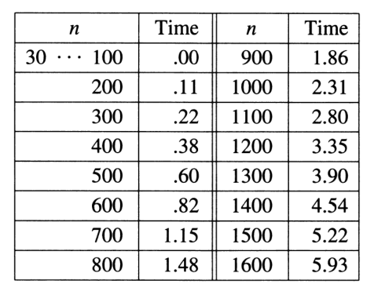

Blue: int j
Yellow: Sorted (first iteration)(int i)

(why blue start from 8? Isn't it 5?
\(n+(n-1)+\dots+3+2=\frac{(n+2)(n-1)}{2}\) why?
Input: 0, 1, 2, 3, 4, 5, 6, 7, 8, 9
Output: 9, 8, 7, 6, 5, 4, 3, 2, 1, 0
\(n=10\)
counter: \(106\) (why not \(45\)
Worst case for selection sort(secends).

|
Red: int max(the graph number is inverted)
Blue: int j Yellow: Sorted (first iteration)(int i)
(why blue start from 8? Isn't it 5? \(n+(n-1)+\dots+3+2=\frac{(n+2)(n-1)}{2}\) why? |